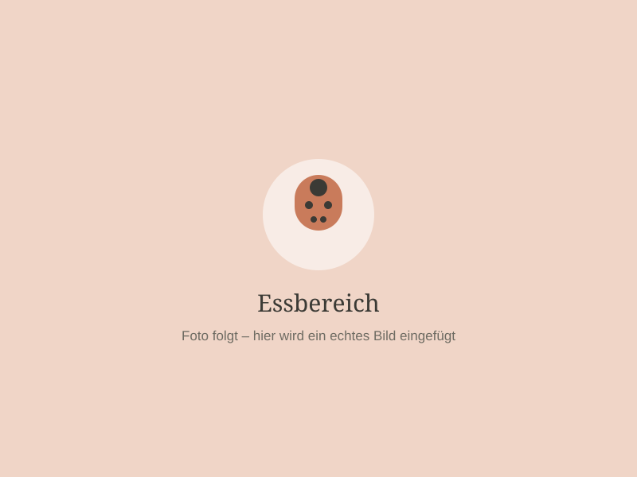
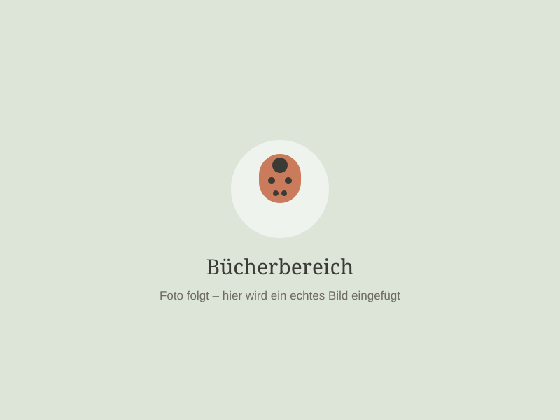

1
Kennenlernen
Erstes Treffen mit Eltern und Kind – wir lernen uns in Ruhe kennen.
Unser Tagesablauf gibt den Kindern Orientierung und Sicherheit, bleibt aber gleichzeitig flexibel und an ihre Bedürfnisse angepasst.
Jedes Kind wird persönlich empfangen und darf in Ruhe ankommen.
Zeit für eigene Ideen, Rollenspiele und Entdeckungen.
Zusammen am Tisch essen, probieren und genießen.
Malen, Basteln, Musik – passend zur Jahreszeit und zu den Interessen der Kinder.
Laufen, klettern, balancieren – drinnen und draußen.
Frische Luft im Garten, auf dem Spielplatz und in der Natur.
Vorlesen, Bilderbücher anschauen, Sprache entdecken.
Zur Ruhe kommen und neue Kraft sammeln.
Dabei ist mir wichtig, dass nicht jeder Tag gleich aussieht.
Kinder brauchen Struktur – aber auch Raum für spontane Entdeckungen.


Der Start in die Kindertagespflege ist für jedes Kind anders. Deshalb gestalten wir die Eingewöhnung individuell und Schritt für Schritt.
Das Kind bekommt die Zeit, die es braucht, um Vertrauen aufzubauen und sich in der neuen Umgebung sicher zu fühlen. Auch die Eltern werden während dieser Zeit eng begleitet.
Unser Ziel: Aus einem neuen Ort soll Schritt für Schritt ein vertrauter Ort werden.
Erstes Treffen mit Eltern und Kind – wir lernen uns in Ruhe kennen.
Mama oder Papa bleiben zunächst dabei. Das Kind erkundet die neue Umgebung in Sicherheit.
Kurze Trennungen, die langsam länger werden – im Tempo des Kindes.
Das Kind fühlt sich sicher, lässt sich trösten und geht seinen Interessen nach.
Du möchtest dein Kind in einer kleinen, liebevollen und familiären Kindertagespflege betreuen lassen? Dann melde dich gerne bei mir. Ich freue mich darauf, dich und dein Kind kennenzulernen.